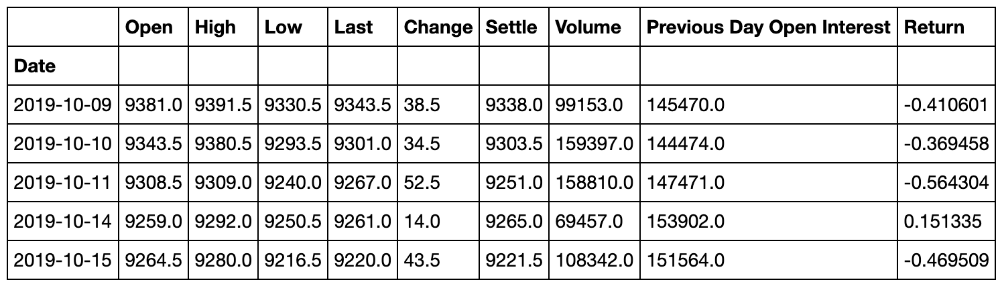
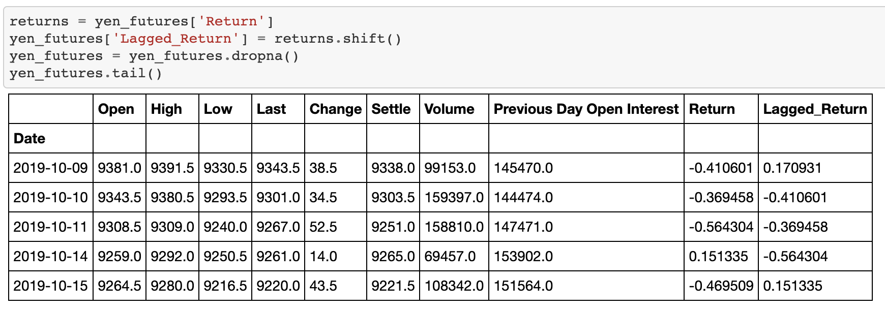
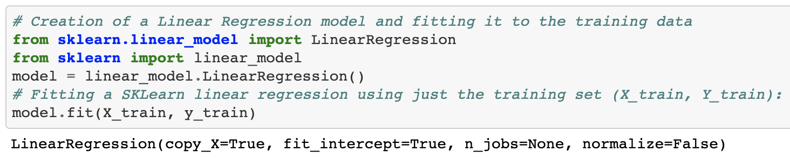
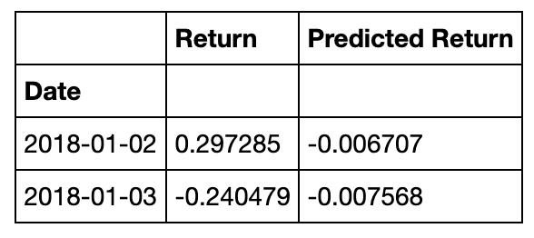
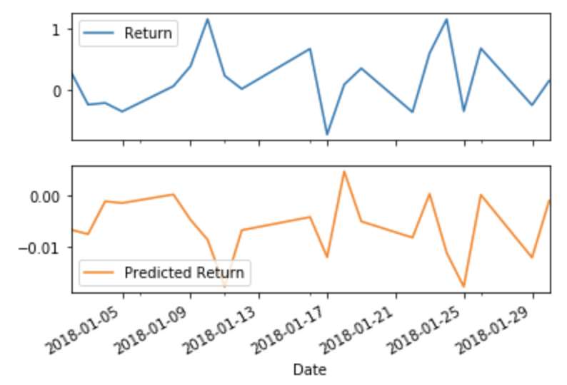
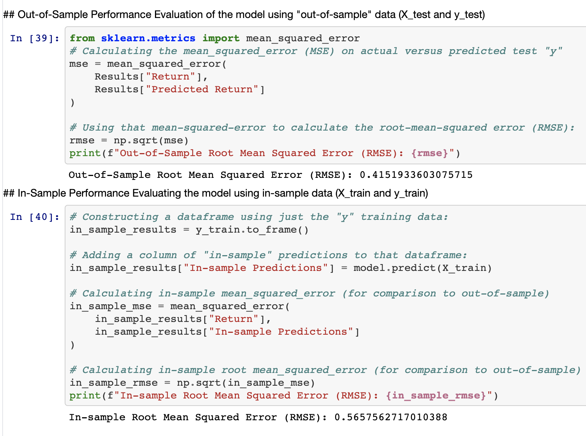

Time Series Forecasting and Linear Regression Modeling
Forecasting currency trends and evaluating trading strategies using ARMA, ARIMA, GARCH, and linear regression techniques in Python.
Summary
This project focused on modeling and forecasting the USD/JPY exchange rate using both time-series and regression techniques. The analysis explored how historical price and volatility patterns could inform future trends and whether these forecasts could support trading decisions.
1. Time-Series Forecasting
Using historical futures data for the Dollar-Yen exchange rate, I applied several time series models to explore potential predictive signals:
- Hodrick-Prescott Filter: Decomposed the time series into trend and noise components.
- ARMA: Forecasted returns based on autoregressive and moving average terms.
- ARIMA: Forecasted the future settle price over a 5-day horizon.
- GARCH: Modeled and forecasted volatility over the same time horizon.
Key Questions Addressed:
- Should I buy yen now based on the price forecasts?
- Is the expected volatility increasing or decreasing?
- Are these models reliable enough for trading?
Results:
- ARIMA forecast showed rising prices → suggested a buying opportunity.
- ARMA forecast showed a price drop → suggested not buying.
- GARCH predicted rising volatility over the 5-day forecast horizon.
- P-values in both ARMA and ARIMA exceeded 0.05 → indicating weak statistical significance. Therefore, these models may not be reliable for trading decisions.
2. Linear Regression Forecasting
I built a linear regression model using Scikit-learn to predict Yen returns based on lagged returns and seasonal calendar effects (e.g., day of the week, week of the year).
 After fitting the model, I used the testing data to evaluate predictions and compare in-sample vs out-of-sample performance.
  Performance Evaluation
Root Mean Squared Error (RMSE):
- Out-of-sample RMSE: 0.4152
- In-sample RMSE: 0.5658
This indicates that the model actually performed better on new data than on the training set—suggesting that the model was not overfitted and may generalize well to unseen data.
Conclusion
- Time series techniques (ARIMA, ARMA, GARCH) offered insights into trend and volatility, but weak statistical significance limits their reliability for active trading strategies.
- The linear regression model demonstrated more consistent results, particularly in predicting returns using lagged values and seasonality.
These combined methods show how statistical forecasting and regression modeling can be used to explore financial strategies and evaluate risk.